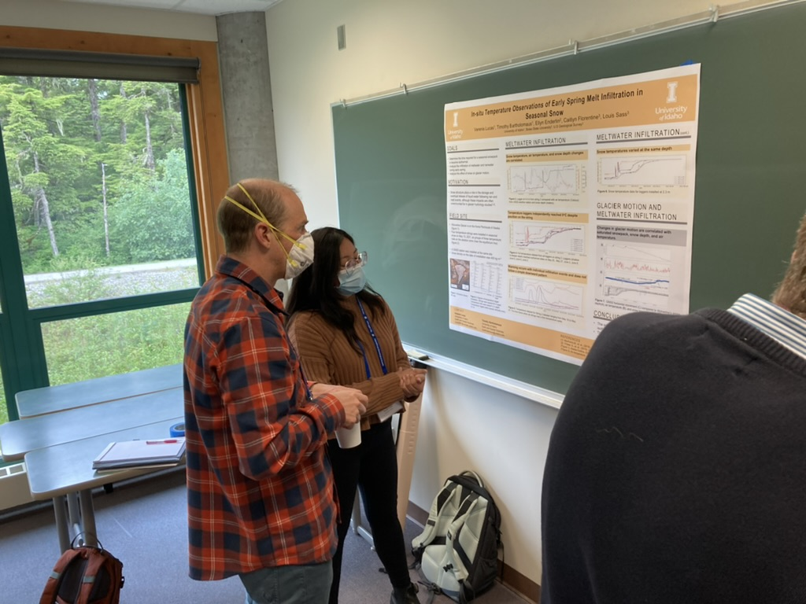
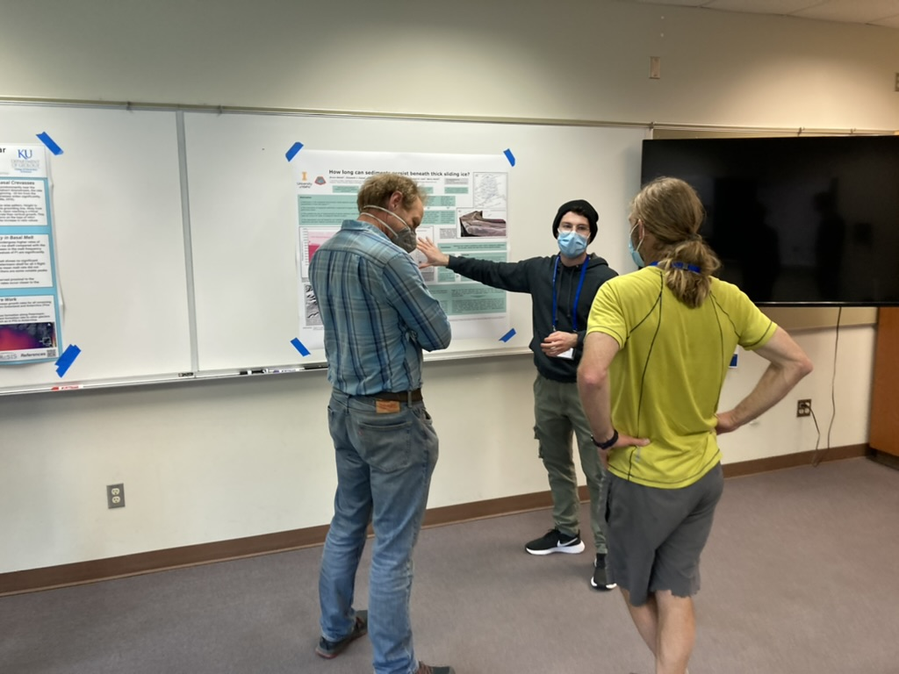
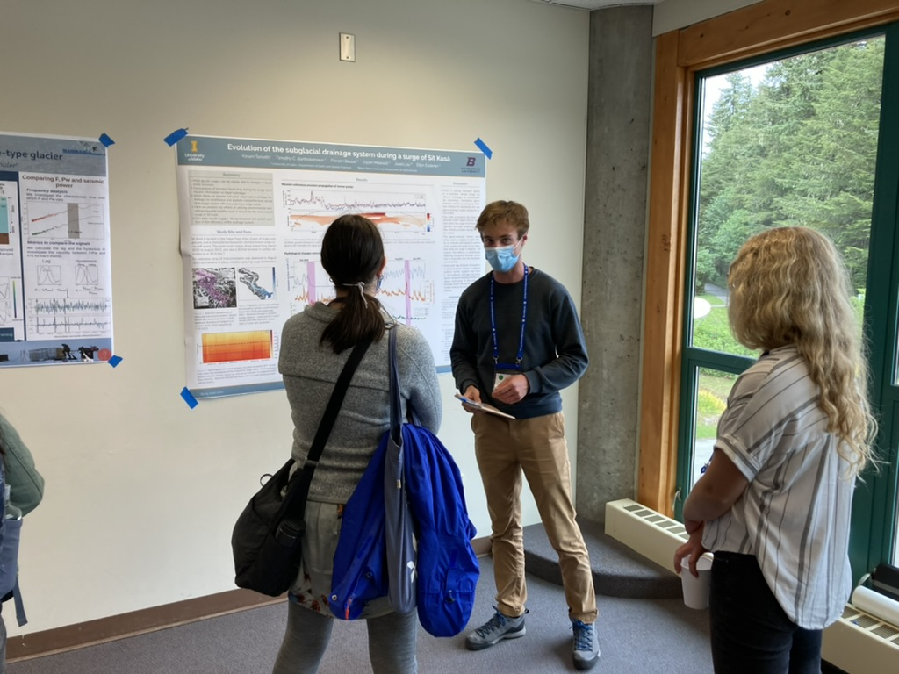

Lab group members Verenis Lucas, Yoram Terleth, Bruno Belotti, and Tim Bartholomaus participated in the International Glaciological Society's Symposium on Maritime Glaciers, in Juneau, Alaska. Verenis presented her work on snowpack warming and water infiltration through spring snow, Yoram presented on water flow through and beneath a surging glacier, Bruno presented on patterns of glacier erosion and deposition, and Tim presented on glacier ablation measured from satellites.
We had a great time and enjoyed connecting with the broader community of glaciologists. One of the highlights was the all-day excursion to the Sawyer Glaciers, in Tracy Arm, south of Juneau (see featured photo). And we were excited to have our member, Yoram, win the honor of best student poster presentation!


